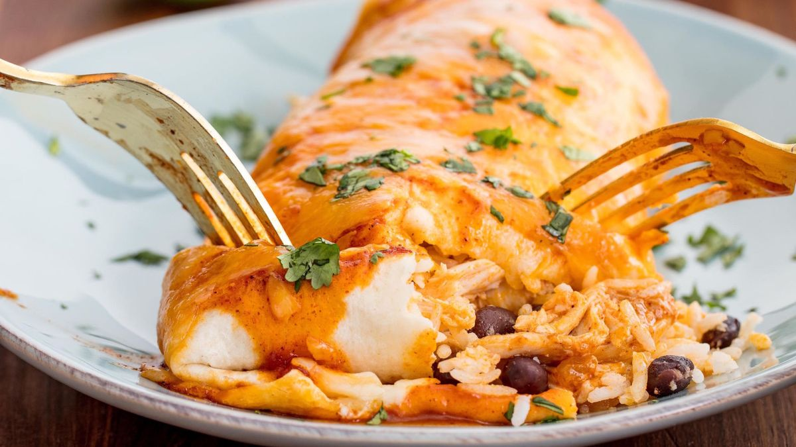

Cheesy Burrito

Description:
In the heartland of Mexico, long ago, the humble tortilla cradled the
gifts of the land—beans, rice, and meats—wrapped in an embrace of
culinary tradition. As the tides of migration flowed, this modest
creation journeyed north, blossoming into the beloved burrito, each
fold whispering stories of culture and resilience. Today, it stands
as a symbol of fusion and flavor, uniting countless palates in a
shared feast of history and innovation.
The following recipe is taken from
Cooking Con Claudia's Grilled Cheese
Beefy Burritos video. I have yet to have the pleasure of
trying this recipe, but I have no doubt it is very good.
Ingredients:
- 1 1/2 cups long grained rice
- 3-4 tbsp tomato paste
- 2 tsp chicken bouillon
- 1 tsp garlic powder
- 1 tsp onion
- 1 tsp onion powder
- 1 tsp onion flakes
- 1/2 tsp ground cumin
- To taste salt
- 2 lbs ground beef
- 1/2 onion
- 2 tsp tomato paste
- 2 tsp garlic powder
- 1 tsp onion powder
- 1/2 tsp cayenne pepper
- To taste salt
- 2 tbsp AFP
- 1/2 cup sour cream
- 2 tbsp mayo
- 2-3 chipotle peppers in adobe sauce
- 1 tbsp jalapenos juice
-
1/2 tsp ground cumin, garlic & onion powder,
chipotle and salt
- Flour tortillas
- Nacho cheese
- Cheese blend
- 1 serving of love!
Steps:
- Put oil in pan
- Put rice in pan, saute for 5 minutes, add a chili seranno
- Put in tomato paste after frying
- Add 3 cups of water
- Put seasoning in
-
Wait to come to simmer, then cover, cook for 20 minutes on lowest
setting
- In another pan, add beef, onion, tomato paste, and seasoning
- Cook meat for seven minutes, add seasoning to paste
- Sprinkle in flour
- Add half a cup of water
- Mix ingredients for chipotle sauce
- Fun part! Make the burrito!
- Add cheese, peppers, rice, beef, and anything else!
- Roll the burrito
-
Fry cheese on pan, put the seam down and have cheese melt on
burrito. Turn burrito after a few minutes
- Serve, and enjoy!